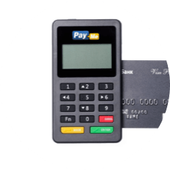
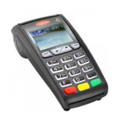
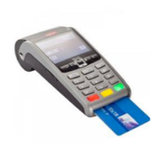
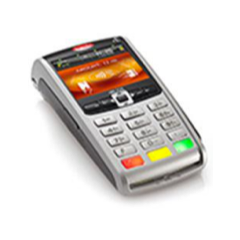

Оплата банковскими картами — это эквайринг. Чтобы эквайринг работал, нужен расчетный счет и терминал. Покупатель вставляет карту в терминал, вводит пин-код, и терминал списывает деньги.
Терминалы выглядят так:
После оплаты деньги приходят в банк-эквайер, а потом — на счет в Модульбанк. Банк-эквайер — это наш партнер: он отвечает за скорость перевода денег с карты покупателя на счет продавца. Перевод денег занимает один рабочий день, в редких случаях — три дня.
Мы предлагаем торговые и мобильные терминалы для эквайринга. Торговый работает от сим-карты, проводного интернета и вайфай, а мобильный терминал — от блютуса. Они подходят магазинам, кафе, такси, компаниям с выездными продавцами и курьерами.
Терминалы занимают мало места, поэтому их удобно ставить в небольшом помещении или брать с собой на встречу с покупателями. Продавцу не придется возиться со сдачей, переживать за сохранность денег или просить клиента приехать в офис для оплаты.
Работа с терминалом не требует специальных навыков. Мы сами его настроим, вам останется его включить и принимать оплату. Для некоторых моделей понадобится скачать приложение, о нем мы тоже расскажем.
Вместе с терминалом даем напечатанную инструкцию. В ней описываем, как включать и выключать терминал, отменять покупку и закрывать смену, если есть касса. Если будут вопросы, ответим по телефону и в чате.
Если продавец потерял терминал, ничего не случится. Терминал умеет только принимать платежи, через него нельзя получить доступ к карте покупателя или счету магазина. Номер счета и карты, пинкод, фамилия и имя покупателя не хранятся в терминале, поэтому конфиденциальные сведения в безопасности.
Обычно клиенты получают терминал от банков. Банки дают их в аренду за небольшую плату или бесплатно, но требуют конкретный объем продаж. Если продаж меньше, банки поднимают комиссию с покупок или забирают терминал.
Мы работаем не так. Мы продаем терминал: клиент может выкупить его сразу или взять в кредит, в любом случае — это его собственность. Если временно покупок нет, клиент не платит абонентскую плату или повышенную комиссию и не отдает терминал обратно. Это удобно, когда клиент только начинает бизнес или работает от сезона к сезону.
Стоимость терминала и размер комиссии зависит от самого терминала:
| Pay-Me беспроводной |
Ingenico ICT 250 CTLS проводной |
Ingenico IWL 250 беспроводной |
Ingenico IWL 250 wi-fi беспроводной |
|
| Терминал |  |  |  |  |
| Подключение | Bluetooth. Через bluetooth терминал соединяется с планшетом или телефоном | Проводной интернет |
Cим-карта | Wi-Fi. Беспроводной интернет |
| Зарядка | Аккумулятор | От сети | Аккумулятор | Аккумулятор |
| Карты | Visa и Visa Electron, MasterCard, Maestro | Visa, MasterCard | Visa, MasterCard | Visa, MasterCard |
| PayPass | Нет | Есть | Есть | Есть |
| Отчет о покупках | Формирует в личном кабинете | Отправляет по эл. почте | Отправляет по эл. почте | Отправляет по эл. почте |
| Комиссия | 2,75% | 1,9% | 1,9% | 1,9% |
| Стоимость | 7700 рублей | 24 500 рублей | 30 000 рублей | 33 000 рублей |
Если неудобно выкупать терминал за раз, мы предложим кредит. Кредит можно взять на срок от трех месяцев до года под 29% годовых. Кредит дает наш партнер — микрофинансовая организация «Финанс Эксчендж».
Пример оплаты по кредиту:
| Терминал | Оплатить сразу | Платить ежемесячно | Переплатить за год |
| Ingenico
ICT 250 CTLS |
24 500 рублей | 2374 рублей сумма уменьшается каждый месяц |
3993 рублей |
У каждого терминала гарантия на год. Если терминал сломается, мы поможем: проинструктируем по телефону или заберем в ремонт. Чтобы ваш бизнес не пострадал, на время ремонта дадим точно такой же. От жалобы на терминал до доставки запасного проходит пять дней или меньше.
Сотрудники помогают заполнить анкету на эквайринг. Банк проверяет документы и когда всё готово, делает договор.
Когда договор готов, мы встречаемся, чтобы его подписать, и тут же вручаем кассовое оборудование. Теперь можно принимать деньги за покупки на счет.
Чтобы пользоваться эквайрингом, к терминалу нужна касса, товарные чеки или бланки строгой отчетности. Что потребуется для терминала зависит от налогообложения и типа бизнеса:
- для вменёнки и патентного налогообложения — товарные чеки;
- для услуг физлицам — бланки строгой отчетности;
- для всех остальных — обычные или электронные кассы с планшетом.
Если вы никогда не работали с терминалом и не знаете, как использовать кассу и документы, напишите нам. Мы всё расскажем.